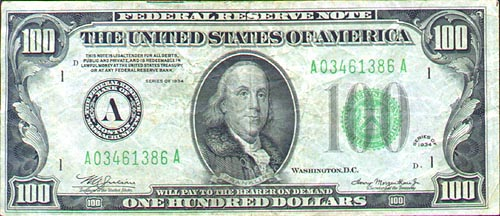
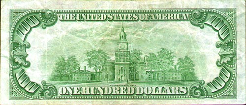
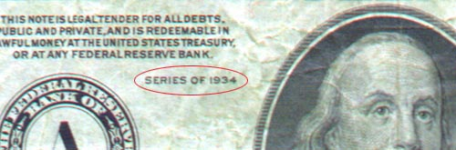

Your Money is No Good Here
Recently, I bought some notions at the local
Target
store.
I think the total was about 20 odd dollars.
All I had on me was this $100 bill dated 1934.
It looked like a silver certificate but it wasn't.
It was kind of cool looking though.
 The cashier looked at it, flipped it over and looked at it some more. She tried looking at the bill through a bright light for watermarks (It didn't have any) or for the inscribed security thread (It didn't have any). She tried using this pen to test the paper was real US currency (It passed). Not convinced, she still looked at it.
 She called someone from Customer Service. After a wait, someone came over and looked at it. She took it away presumably to show the bill to her manager. Another wait. My $100 bill came back. They called their Security Department. After a long wait, a security person came over and took my $100 bill away probably for further analysis at their secure lab. I could feel the surrounding security cameras taking a bead on me. Recording my face. During all this, another customer, an older guy, asked me what was going on. After I told him, he chuckled and asked to see the bill. I told him Target's security had it. He said too bad as he hadn't seen 1934 $100 bill in a long time.
 After another long wait, they returned the $100 bill to me with all these test marks and creases on it. They said they couldn't accept it as payment. They didn't deny it was real money. It's just that no one could confirm it was a real $100 bill! It took the people at Target almost 30 minutes to come to this conclusion. Looking around, I could see no one was old enough to remember what real $100 bills used to look like. This included the cashier, their customer service managers and even their entire security department! It was bizarre. (No one among them collected paper money as a hobby. It reminds me of the time when someone didn't recognize my walking liberty half dollar as real money. Or my mercury dimes as real dimes!)
|